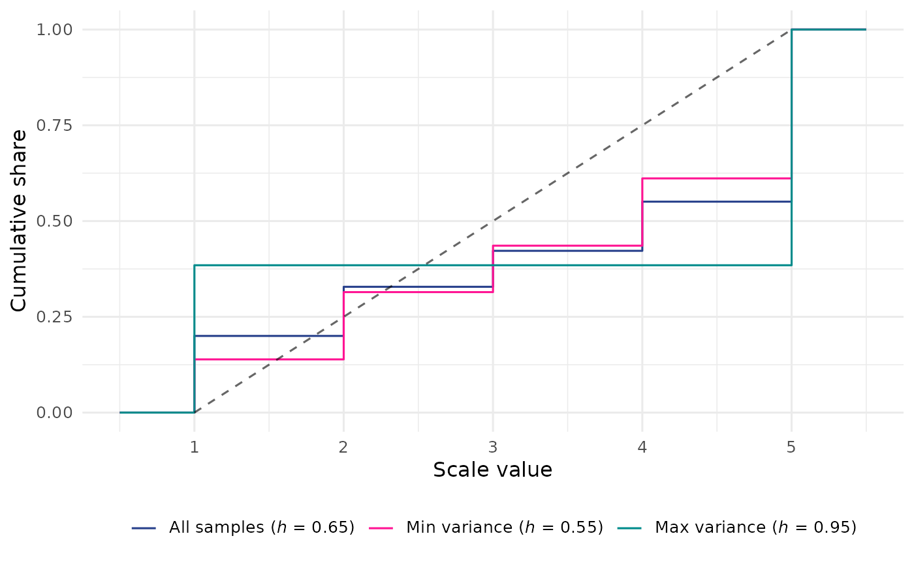

Call closure_plot_ecdf() to visualize CLOSURE results using
the data's empirical cumulative distribution function (ECDF). This can be
useful to display any variation between CLOSURE samples.
See closure_plot_bar() for more intuitive visuals.
Arguments
- data
List returned by
closure_generate()orclosure_read().- samples
String (length 1). How to map the samples to ECDF lines?
"mean_min_max", the default, draws three lines: overall mean across all samples, mean of the samples with the minimum horns index, and mean of the samples with the maximum horns index."mean"draws a single line for the overall mean."all"draws a separate line for each sample, colored by its horns index value. Note: This is invalid ifdata$resultsdoes not include thesampleandhornscolumns. If many samples were found, it can be very slow or even crash your R session.
- pad
String (length 1). How far should the ECDF line(s) stretch?
"extend", the default, draws the lines to both ends of the y-axis vertically and slightly beyond that horizontally, asggplot2::stat_ecdf()does by default."match"draws them vertically as above, but not horizontally. Note: This is currently invalid in combination withsamples = "all"."stop"does not draw the lines beyond the data points at all.
- legend_title
String (length 1). Defaults for the legend title depend on
samples:With
samples = "mean_min_max", the legend title is absent by default because it can make the legend extend beyond the plot itself. If you do choose a title, considerlegend_title = "Subset of samples".With
samples = "mean", there is no legend, and hence no title.With
samples = "all", the title says "Horns index" unless you provide a different one.
To remove the legend or change its position, use
legend.positioninggplot2::theme().- line_color_single
String (length 1). If
samplesis"mean", this is the color of the single ECDF line. Default is"#5D3FD3", a purple color.- line_color_multiple
String (length 3). If
samplesis"mean_min_max", these are the colors of the three ECDF lines. Default is"royalblue4"for the overall mean,"deeppink"for the minimum horns index, and"darkcyan"for the maximum horns index; in this order.If
samplesis"all", the colors for min and max horns index values are used for the low and high ends of the gradient.- text_size
Numeric (length 1). Base font size in pt. Default is
12.- reference_line_alpha
Numeric (length 1). Opacity of the diagonal reference line. Default is
0.6.- mark_decimal
String (length 1). Decimal delimiter in the labels. Default is
"."(e.g.,"0.15").
Details
This function was inspired by rsprite2::plot_distributions()
with its option plot_type = "ecdf". However, plot_distributions()
invariably shows one line per (randomly drawn) possible dataset, and it
does not support the horns index or other measures of dispersion. Some
further differences exist.
Examples
# Create CLOSURE data first:
data <- closure_generate(
mean = "3.5",
sd = "2",
n = 52,
scale_min = 1,
scale_max = 5
)
#>
#> ✔ All CLOSURE results found
# Visualize:
closure_plot_ecdf(data)
